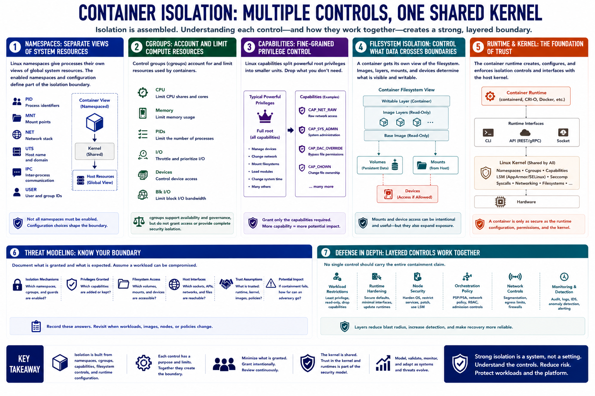

Container Isolation Boundaries
Connecting to LMS... Progress: in progress

Narration
Container isolation is assembled from several controls rather than provided by one wall. Linux namespaces give processes separate views of resources such as process identifiers, mounts, networking, host names, and users. The exact namespaces enabled and their configuration define part of the boundary.
Control groups, or cgroups, account for and limit resources such as CPU, memory, and process counts. They support availability and workload governance, but resource limits alone do not authorize access or create complete security isolation.
Linux capabilities divide powerful system privileges into smaller units. Removing capabilities reduces what a process can ask the kernel to do. Granting broad or unnecessary capabilities weakens the least-privilege assumption even when the workload still runs inside namespaces.
Filesystem isolation normally presents a container-specific root filesystem. Image layers, writable layers, volumes, device access, and host mounts determine what data crosses that boundary. A mount can intentionally share information while also expanding the assets exposed to the workload.
The container runtime creates and manages these controls and communicates with the host kernel. Runtime configuration, interfaces, versions, and permissions are therefore part of the trust model. A container remains dependent on the security and correctness of the shared kernel.
Threat modeling should record each isolation mechanism, the privileges and mounts granted, and the expected host interfaces. Defense in depth matters because no single control should carry the entire containment claim. Workload restrictions, runtime hardening, node security, orchestration policy, and monitoring reinforce one another.